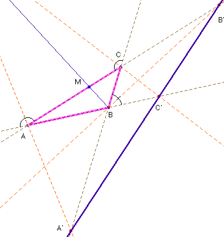

Problema nº 96.- Un problema de las bisectrices exteriores.
Las bisectrices exteriores de los tres ángulos de un triángulo escaleno cortan a sus tres lados opuestos en tres puntos que están alineados.
Solución de Saturnino Campo Ruiz, profesor del IES Fray Luis de León de Salamanca.-

1ª demostración. Nos apoyamos en tres hechos:i) El teorema de Menelao.
ii) La razón de las áreas de dos triángulos de igual altura es la razón de las bases respectivas.
iii) El área de un triángulo es proporcional al producto de dos lados cualesquiera por el seno del ángulo comprendido.
Llamaremos a, b y g a los ángulos interiores correspondientes a los vértices A, B y C.
Según esto, en los triángulos BB’C y ABB’ se tiene: =
= = .
(áng.(CB’B)= 180-(180-g)-(90-b/2)=g+b/2-90=90-a-b/2).
Despejando B’A = (1). Por otra parte, si expresamos el área del triángulo ABB’ mediante los lados BB’, B’A y el ángulo comprendido, y el área de BB’C mediante los lados BB’, BC y el ángulo comprendido tendremos , de donde podemos despejar
B’C = (2). Combinando (1) y (2) llegamos a: = . Por permutaciones de las letras A, B, C se obtienen igualmente: y . Por tanto que, según el teorema de Menelao demuestra la alineación de A,’ B’ y C’.
2ª demostración:
También haremos uso del teorema de Menelao.
Si BM es la bisectriz interior de B, los puntos M y B’ separan armónicamente a los puntos A y C. (Puede verse demostrado en el problema nº 71, Teorema de Blanchet).
Es decir, la razón doble (B’MCA) = -1; desarrollado, esto equivale a poner . De otra parte, la bisectriz interior divide al lado opuesto en dos segmentos proporcionales a los lados que en ella concurren (teorema de la bisectriz), por tanto . El resto es igual que en la primera demostración aplicando el teorema de Menelao. c.q.d.